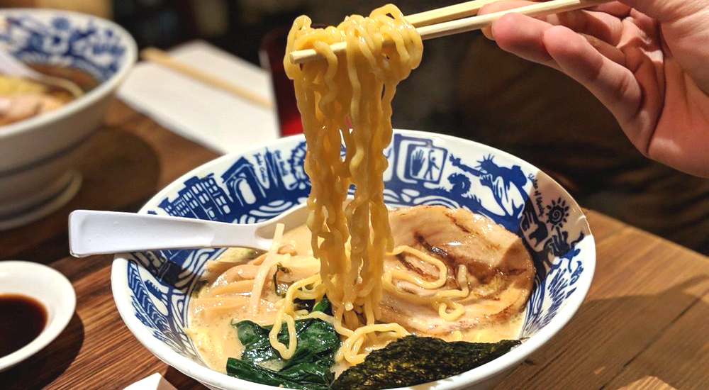

Enchiladas verdes
Por: Maria Perez
Las enchiladas verdes son un platillo que consta de
tortillas rellenas de pollo
bañadas en salsa verde. Estas van al horno con el queso gratinado
Esta receta me la vole de copiar las enchiladas del Bajio.

Ramen

Por: Yukiko Amamiya
El Ramen es una sopa a base de caldo de Cerdo y Pollo y Fideos. Esta receta
trae un poco de cerdo para complementar los
fideos y alga marita para dar un contraste en el sabor.